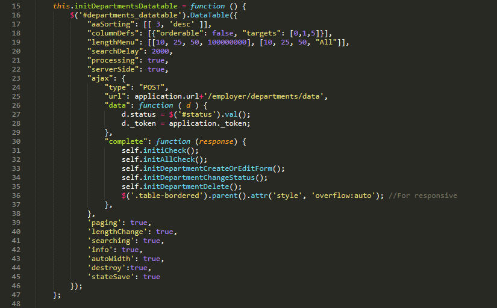
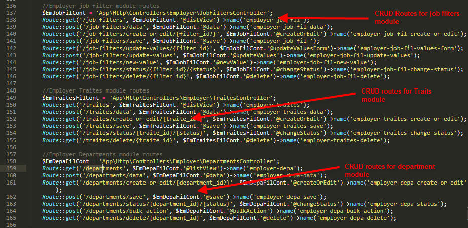
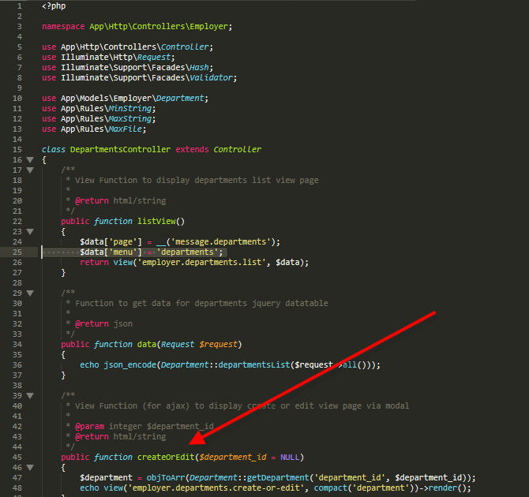
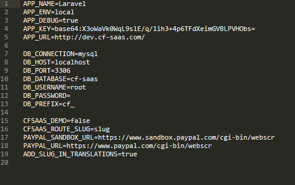

Introduction
The system is built on laravel with the standards and code practices recommended in official documentation. The system is fully tested and have no major bugs at it's core. Still there are any mis expectations, they will be fixed shortly in the updates.
The system is built on a "modular" approach. Every module like 'user / candidate / quiz' has separate files. e.g. (Controller, Model, Views Folder, Routes, Js). Like for a department module in employer section, there is
- app->Http->Controllers->Employer->DepartmentsController.php
- app->Models->Model->Department.php
- app->resources->views->employer->departments->list.blade.php
- app->resources->views->employer->departments->create-or-edit.blade.php
- assets->admin->js->cf->department.js
Middlewares
Along with other default middlewares provided by Laravel, following are custom made middlewares created as per the convetions of laravel for different purposes. Middlewares can be located at "app -> Http -> Middleware"
- EssentialsSettings -> Simple middleware used in all routes to check if the installation is done and set selected laravel language.
- IsAdmin -> To protect admin auth routes.
- IsEmployer -> To protect employer auth routes.
- IsCandidate -> To protect candidate auth routes.
- SetEmployerSlug -> It sets the slug of the selected employer in session so that the candidate experience for a particular/single employer site can be maintained. It's used in both candidate public and auth routes
- XssSanitizer -> User in post routes to clean data from xss.
Routes
As recommended by Laravel and other MVC frameworks, routes are used to simplify and create an ease in the request structure for the application. The Routes file can be located at
"root -> routes -> web.php"
As per the conventions of laravel
- 1a : Employer public routes are grouped together.
- 1b : Employer auth routes are grouped together.
- 2a : Admin public routes are grouped together.
- 2b : Admin auth routes are grouped together.
- 3a : Candidate public routes are grouped together with subdomain slug.
- 3b : Candidate auth routes are grouped together with subdomain slug.
- 4 : Front site routes are grouped together.
- 3c : Candidate public routes are grouped together with folder slug.
- 3d : Candidate auth routes are grouped together with folder slug.
{kind=link}
{kind=link}

{kind=link}
{kind=link}
and son on ....
Controllers
Controllers are core part of any MVC framework. All http requests lands on controller functions resolved via routes.
Admin controllers are located at : "app -> Http -> Controllers -> Admin"
Employer controllers are located at : "app -> Http -> Controllers -> Employer"
Candidate controllers are located at : "app -> Http -> Controllers -> Candidate"
Front (website) controllers are located at : "app -> Http -> Controllers -> Front"
The approach is followed to separate the each concerns functionality to a more cleaner code.
{kind=link}
Models
Models are core part of any MVC framework. Models are called via controller functions. All Database queries are written in in "Query Builder" feature of the Laravel framework in models. The models for Admin/Employer/Candidate/Front are separated from each other to accomplish "Loose Coupling" and to have an ease to modify the code. Models are located at
"app -> Models"
The separation is similar as in controllers.
{kind=link}
Views
Views are third most integral part of any MVC framework.
The views are again separated on the basis of concerns (Admin / Employer / Candidate / Front)
As in the pictures, views are arranged module wise.
{kind=link}
Helpers
Like any other software application, there are classes as helpers which are essentials for the application functioning and part of few or all concerns of an application. So, we have the following helpers located at "app -> Helpers"
- Helper : This file contains a lot of granular/small functions required in all aspects and modules of the application whether it be view, model or controller. So, it is loaded globall via composed.json file.
- DbImport : It has dummy data in it which can be used to see application in action. It can be accessed via a route "maindomain/data"
- DbTables : Laravel has a very unique way of declaring the whole database within the application code which can be accessed via artisan commands. Since this application is also intended for non technical users, this class can be simply access via route "schema" or during installtion
- EmployerSettingsHelper : Built on singleton, it provides settings for any employer.
- SettingsHelper : Built on singleton, it provides settings for admin.
- EmployerPermissionsHelper : Built on singleton, it provides permission for any employer.
- MembershipHelper : Built on singleton, it checks whether an employer has some particular feature in his/her membership or not.
- StripeHelper : Since stripe does not provide any sdk, this helper has an organized way of dealing with stripe apis.
- LinkedinHelper : Since Linkedin does not provide any sdk, this helper has an organized way of dealing with linkedin apis.
Assets
Assets are all in the public folder in the root where all the theme files (js, css and image) are stored. Also, as stated above this folder also contains the functional javascript files. Folders are separated again on the basis of concerns (Admin / Employer / Candidate / Front).
Schema / Database
To avoid the hassle of creating ".sql files" and importing them manually, the complete database structure is written inside the application itself in the "app -> Helpers -> DbTables.php" file. With the help of Laravel's schema class, all table definitions are written as separate functions in this file. You need to simply access the url like below and the whole database will be created.
Note : The database credentials should already be there in "root -> .env" file.
Route for creating schema : "https://www.example.com/schema"
{kind=link}
Apis
Google Login Google client library is installed via composer and cleaned a bit to only have relevant code. The credentials for it to work are stored in database.
Linkedin Login The linkedin client is served via a helper stored in "app -> Helpers -> LinkedinHelper.php". The credentials are again stored in database.
Candidates.php (Front Controller) class where the above two features are implemented.
{kind=link}
{kind=link}
{kind=link}
Datatables
Datatables are used natively without any external dependency to avoid performance overhead. So, in five simple steps, datatable requests are done.
1. Request initiated from .js file with all the filters.

2. Request goes to routes/web.php file on this line as post request.
3. Request goes to controller function.
4. Request goes relevant model function and filters are implemented.
5. Request then goes to sort function and then finally returned to view from controller.
In this way, all of the admin datatables are working.
{kind=link}
{kind=link}
{kind=link}
{kind=link}
{kind=link}
App.js
This file is one of the most important one in the system as it is the wrapper / abstract class for all the javascript functionalities like AJAX requests, form submissions, message display and other things. It is included in the main footer file for both admin and front end as separate copies.
The file is located at "root -> app -> public -> -> admin -> js -> cf -> app.js"
and at "root -> app -> public -> -> front -> js -> app.js"
All of the module js files are using functionalities from this class to maintain modifications and reusability. Module files as mentioned above are included in every module's index.php/list.php file.
CRUD Operations
Almost all crud operations are following this convention of routes in the whole application.

1a 'admin/departments'. First is for main page of module.
1b 'admin/departments/data'. This one is for main page as well which is requested as an ajax get request after the main page is loaded.
2a 'admin/departments/create-or-edit'. This routes is also requested via ajax get request and it loads the form from view partial into the modal.
2b 'admin/departments/create-or-edit/(:any)'. This is same is above but the difference here is that, it happens in "EDIT" scenario and the above happens in create scenario

3 'admin/departments/save'. When the forms loaded in '2a' and '2b' are submitted, they are submitted to this as ajax post request which either successfully stores the data or return any errors if any.
4 'admin/departments/status'. This route is again accessed via ajax get request and used to change the resource information to either active or inactive.
5 'admin/departments/bulk-action'. In listing screens of the application, there is an "Actions" menu which on selecting any item hit on this route via the below function.
{kind=link}
{kind=link}
{kind=link}
{kind=link}
{kind=link}
{kind=link}
{kind=link}
{kind=link}
{kind=link}
{kind=link}
{kind=link}
{kind=link}
CSRF Protection
CSRF protection is implemented in app.js with every request
CSRF token is generated and added in header.php file and adds to every request from app.js
Whenever any request is not via app.js, then "csrf" function of laravel is used which automatically adds token variable.
SQL Injection Prevention & XSS
All queries are used with the help of laravel's Eloquent which automatically prevents sql injection attacks.
XSS is implemented via middleware XssSanitizer.
Installation
The installation procedure/mechanism is all written inside the "app -> Controllers -> EssentialsController". The process simply reads some env variables and see if the values are there or not, if not, it redirects to installation routes and does not allow any other application routes via the "app -> Http -> Middleware -> EssentialSettings" middleware. On the db credentials screen, it asks for db credentials and first check by making connection. If successfull, it writes credentials to .env file and then run the DbTables class. In the next step it redirects the wizard for admin credentials. Once successfully created, it redirects to main application. As long as the db credentials are in .env file, install routes can not be accessed again.

{kind=link}
Help
If you are still not clear with any thing in technical terms, Please feel free to contact us via our codecanyon support link.